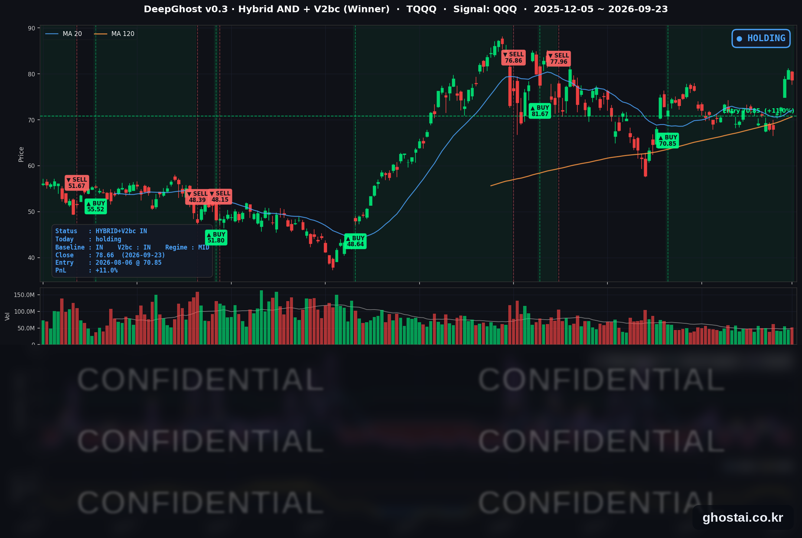

숨고르기/10Y 금리 5.1% 돌파
· Ghost.AI 데일리 리포트
👻 매일 시그널과 히스토리를 홈페이지에서 한눈에 → www.ghostai.co.kr
회원 페이지 안내 — 회원 가입하시면 커버리지 전 종목의 원본 시그널과 분석 레포트를 매일 확인하실 수 있습니다. 회원 페이지는 블로그·유튜브보다 먼저 업데이트됩니다. 선착순 100명을 모집하고 있으며, 이메일과 필명만으로 가입하실 수 있고 서비스 사용료는 받지 않습니다. 가입 신청 후 운영자 승인을 거쳐 이용하실 수 있습니다.
미국 10년물 국채금리가 하루에 14.6bp 올라 5.114%, 2007년 7월 이후 가장 높은 종가로 마감했습니다. 그럼에도 불구하고 주요 지수의 하락 폭은 1% 안팎이었습니다. 시장이 적응을 해가는 과정입니다. 오늘은 그냥 그 동안 급등 후 쉬어가는 장세였습니다.
📊 오늘의 매매 신호
| 항목 | 내용 |
|---|---|
| 오늘 할 일 | ✅ 아무것도 안 해도 됩니다 |
| 포지션 상태 | 📈 TQQQ 보유 중 (IN POSITION) |
| 매수 진입일 | 2026-08-06 (34거래일째) |
| 진입가 → 현재가 | $70.85 → $78.66 |
| 현재 포지션 수익 | +11.02% |
TQQQ 시그널 — IN POSITION
현재 상태: 매수 포지션 유지 중 | 이번 포지션 수익 +11.02%

나스닥100(QQQ)이 -0.84% 내리면서 TQQQ는 -2.68% 하락한 78.66달러로 마감했습니다. 전략의 평가수익률은 전 거래일 +14.09%에서 +11.02%로 줄었습니다. 하루 하락은 있었지만 전략은 보유를 유지하고 있습니다. 앞으로는 오늘 같은 1% 안팎의 하락이 아니라 하루에 큰 폭의 하락이 나오는지가 관전 포인트입니다.
오늘의 이야기 — 금리는 2007년 이후 최고, 주식은 1% 안팎
하루 안에 금리를 올리는 재료가 세 번 나왔습니다.
- 오전 9시 45분 — 경기지표: S&P Global 9월 예비 종합 PMI가 58.4로 예상(55.3)을 크게 웃돌았습니다. 2021년 7월 이후 가장 강한 확장이고, 기업의 원가 부담을 보여 주는 투입가격은 2022년 10월 이후 가장 빠르게 올랐습니다.
- 오전 10시 5분 — 연준 이사 발언: Barr 이사가 "추가 정책 조정이 필요할 가능성이 높다"고 말했습니다.
- 오후 1시 — 5년물 입찰: 700억 달러 입찰의 낙찰금리가 5.033%로, 입찰 직전 시장 금리보다 3.1bp 높았습니다. 수요가 약했다는 뜻입니다.
QQQ·SPY는 거의 보합으로 출발했고, 하락은 대부분 이 재료들이 나온 정규장 안에서 나왔습니다. 결과는 S&P 500 -0.75%, 나스닥 -1.13%입니다. 금리 수준에 비하면 지수 하락 폭은 크지 않았지만, S&P 500 구성종목 중 오른 종목은 33%에 그쳤습니다.
금리에 민감한 업종부터 내렸습니다. 주택건설 -2.73%, 유틸리티 -2.00%, 리츠 -1.52%(테마별 중간값)입니다. 30년 고정 모기지 금리도 약 2년 만의 최고 수준인 7%대 중반으로 올라왔다는 보도가 나왔습니다.
오늘 미국 시장 — 시황 요약
지수 마감
| 지수 | 종가 | 등락률 |
|---|---|---|
| S&P 500 | 7,706.03 | -0.75% |
| 나스닥 종합 | 26,936.04 | -1.13% |
| 다우존스 | 51,511.59 | -0.68% |
| IWM (러셀 2000 ETF) | 281.92 | -1.84% |
| QQQ (나스닥100) | 741.21 | -0.84% |
| TQQQ | 78.66 | -2.68% |
소형주 ETF(IWM)가 가장 많이 내렸습니다.
국채 금리 동향
| 만기 | 수익률 | 전 거래일 대비 |
|---|---|---|
| 3개월 | 4.028% | +2.3bp |
| 5년 | 4.997% | +15.5bp |
| 10년 | 5.114% | +14.6bp |
| 30년 | 5.401% | +9.8bp |
10년물과 5년물 모두 2007년 7월 이후 최고 종가입니다. 30년물과 3개월물은 2026년 최고 종가입니다. 가장 많이 오른 구간이 5년물이라는 점이 중요합니다. 2~5년 구간 금리는 앞으로 1~2년의 정책금리 경로를 반영하므로, 시장이 연준의 추가 인상 가능성을 더 높게 본 것입니다.
10년물과 3개월물의 차이는 96.3bp에서 108.6bp로 벌어졌습니다. 장기 금리가 단기 금리보다 더 크게 오른 형태로, 경기 침체보다는 경기 과열과 물가를 걱정하는 움직임입니다.
연준 발언 & 금리 패스
- 마이클 바(Michael Barr) 연준 이사: 주거비를 주제로 한 연설에서 9월 16일 인상을 "필요한 재조정"으로 평가하면서, 인플레이션을 제때 목표로 되돌리려면 "추가 정책 조정이 필요할 가능성이 높다"고 말했습니다. 투표권을 가진 이사가 추가 인상을 기본 시나리오로 밝힌 것입니다.
- 수전 콜린스(Susan Collins) 보스턴 연은 총재: "다소 더 제약적인 연방기금금리"가 인플레이션을 되돌리는 데 도움이 될 것이라고 썼습니다.
- 알베르토 무살렘(Alberto Musalem) 세인트루이스 연은 총재: 추가 인상 필요성을 시사한 것으로 보도됐습니다.
세 명 모두 추가 인상 쪽이었고 반대 방향 발언은 없었습니다. 선물시장이 반영한 10월 인상 확률은 약 71%로 보도됐습니다. 연내 남은 FOMC는 10월과 12월 두 차례입니다.
오늘의 핵심 이슈
-
10년물 금리가 2007년 이후 최고치로 올랐습니다. 예상을 크게 웃돈 PMI, Barr 이사의 발언, 약했던 5년물 입찰이 하루에 겹쳤습니다. 주택·유틸리티·리츠처럼 금리에 민감한 업종이 가장 크게 내렸고, 나스닥이 S&P 500보다 더 내렸습니다.
-
메타 Muse 여파가 이틀째 여행 예약 플랫폼으로 번졌습니다. 사용자가 예약 사이트를 거치지 않고 AI 에이전트에게 항공권·숙소 예약을 맡길 수 있다는 점이 부각되면서 EXPE -7.72%, ABNB -7.56%, BKNG -5.07%로 내렸습니다. 급여 처리업체 PAYX는 실적이 예상을 웃돌았지만 연간 가이던스를 유지해 -8.77% 떨어졌습니다. 장 마감 후 메타 Connect 기조연설에서는 Muse에 Shopify·PayPal·Walmart 등 쇼핑·결제 연동이 추가됐습니다.
-
원유와 에너지, 사이버보안은 올랐습니다. 원유 ETF USO가 +3.30% 오른 148.83달러로 마감했고, 에너지 E&P 업종도 중간값 +1.63% 올랐습니다. 대형 기술주가 내리는 날 사이버보안은 PANW·CRWD가 각각 약 +5% 올랐습니다. 유가 상승은 PMI의 원가 상승과 함께 물가 우려를 키워 금리 상승 쪽에 무게를 더했습니다.
변동성 & 투자심리
VIX는 15.18(+6.83%)로 전 거래일 연중 최저치(14.21)에서 올랐지만, 9월 16일 FOMC 당일(17.71)보다는 낮습니다. 금리가 2007년 이후 최고로 오른 날치고는 변동성 반응이 크지 않았습니다. 공포탐욕지수는 약 35로 "공포" 구간이며 전 거래일(34)과 비슷합니다.
매크로 & 원자재
| 품목 | 종가 | 등락률 |
|---|---|---|
| 원유 (USO) | $148.83 | +3.30% |
| 금 (GLD) | $392.88 | -1.80% |
금리가 크게 오른 날이라 이자를 주지 않는 금은 약세였습니다. 원유는 EIA 주간 재고에서 원유 재고가 늘었지만 휘발유·중간유분 재고가 줄었고, 디젤 전국 평균 가격이 갤런당 6.52달러로 사상 최고라는 보도가 나왔습니다.
주요 종목 동향
| 종목 | 종가 | 등락률 | 비고 |
|---|---|---|---|
| META | 744.10 | +1.02% | 장 마감 후 Connect 기조연설(Muse 쇼핑·결제 연동) |
| MSFT | 500.59 | +0.52% | 500달러 회복 |
| TSLA | 380.12 | +0.32% | 보합권 |
| QCOM | 197.24 | -0.52% | 상승 출발 후 정규장에서 하락 |
| AAPL | 337.02 | -0.80% | 상승 출발 후 정규장에서 하락 |
| INTC | 122.60 | -1.02% | 5거래일 +21.3% 뒤 소폭 하락 |
| NFLX | 71.36 | -1.11% | 5거래일 -6.6% |
| MU | 1,071.88 | -2.22% | 전 거래일 +5.00% 뒤 하락. FQ4 실적 9/30 장 마감 후 |
| AMZN | 249.27 | -2.24% | 소비재 전반 약세 |
| AVGO | 354.99 | -2.62% | 반도체 안에서도 약세 |
| GOOGL | 337.83 | -3.80% | 미시간 데이터센터 파트너 이탈, EU 반독점 과징금 가능성 보도 |
오른 종목은 META·MSFT·TSLA뿐이고, GOOGL은 개별 악재가 겹쳐 가장 크게 내렸습니다.
다음 거래일 일정
- 9/24(목) 13:00 ET 7년물 440억 달러 입찰 — 5년물 수요가 약했던 직후라 중장기 금리 방향을 다시 확인하는 자리입니다.
- 9/24 08:30 ET 신규 실업수당 청구건수, 10:00 ET 8월 신규주택판매 — 모기지 금리가 2년 만의 최고 수준으로 올라온 상태에서 나오는 주택 지표입니다.
- 메타 Connect 2일차 — Muse 쇼핑·결제 연동 발표 후 첫 정규장 반응이 나옵니다.
- 9/25(금) 내구재 주문, 미시간대 소비자심리 확정치
Ghost.AI — Quantitative AI Investment
Model: DeepGhost v0.3 | Transformer-Based Deep Learning
Coverage: 13 tickers | Updated every trading day after US market close
⚠️ 본 자료는 정보 제공 목적으로만 작성되었으며 투자 권유가 아닙니다. 모든 투자의 책임은 투자자 본인에게 있습니다. 과거 성과가 미래 수익을 보장하지 않습니다.
[유의사항]
- 본 서비스는 불특정 다수를 대상으로 발행되는 단방향 정보 제공 서비스이며, 투자자 개인의 재산 상황·투자 목적·위험 선호도를 반영한 개별 투자 조언이 아닙니다.
- 고스트에이아이 주식회사는 고객과 쌍방향 의사소통(개별 상담, 맞춤형 자문 등)을 제공하지 않습니다.
- 본 콘텐츠는 투자 권유 또는 매매 주문의 청약·청약의 권유에 해당하지 않으며, 최종 투자 판단 및 그에 따른 손익의 책임은 전적으로 투자자 본인에게 있습니다.
고스트에이아이 주식회사